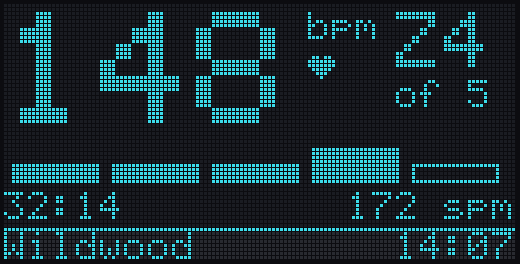
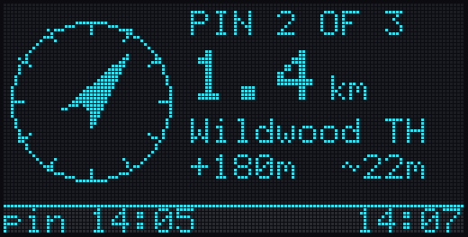
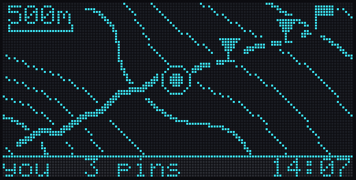
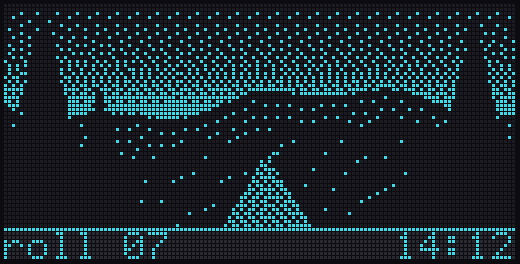
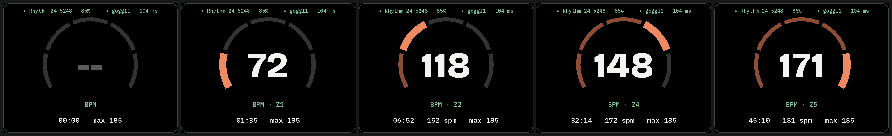
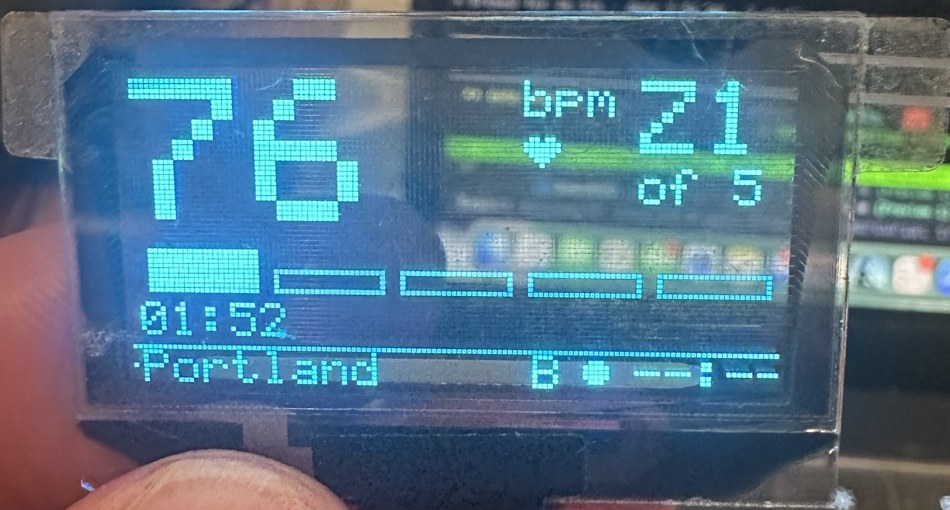

Open.Weird.Wild.Strong.
Switchback on your face. The phone stays basecamp: it plans the route, builds the maps and holds the big data. goggl1 stays the glance: one colour, always on, readable in sun and rain. SpecsSwitchbackXR is the lookout, the view you raise when you want more than a glance: your heart rate as a ring, your pins standing in the landscape, the session's roll as a contact sheet, and a remote for whatever the goggle shows next.
The question was whether the glasses can talk to our devices without bonding, because Lens Studio's Bluetooth API cannot bond at all (no createBond(); SkywriterBLE's keyboard hung until bonding was turned off in its firmware). Our devices never ask for it: the console is an open Nordic UART service. The probe lens NusProbe.ts ran on the glasses against a maplet:
A hundred milliseconds a line is fast enough for a once-a-second HUD and for pushing a 1 KB goggle frame in a couple of seconds. BLE is the transport. WebSockets stay a fallback we do not need.
PERMISSION_DENIED until the WebView demos came out. Snap's docs go further: Bluetooth also turns off the camera frame, location and the microphone for that lens. SkywriterBLE's GPS_RAW denial fits that, and a camera probe will confirm it. Extended Permissions lifts the rule on a developer's glasses, but such lenses cannot be published.So the glasses cannot know where they are, and in a shipping lens they cannot take the photo. The phone has GPS; the maplet has a camera and a card. The design follows from that.
GPS, weather, terrain tiles, route plans, the pins you set before you go. Renders maps to 1-bit for the glass. Keeps every session, pin and roll.
Always on. Heart rate, the arrow to your next pin, a minimap with you on it, a dithered photo. Holds the session's pins and the current position so the glasses can read them.
Raised when you want it. Reads the strap directly, shows pins in the world, browses the roll, picks what goggl1 shows. Bluetooth only, no internet.
The camera and the microSD. Its roll is what the glasses browse and what goggl1 can show, one 1 KB frame at a time.
The glasses talk to each device directly: goggl1 for the glance, the maplet for its roll and its own e-paper, the strap for heart rate. They hold several links at once (strap and goggl1 measured together); one scan runs at a time, so the lens queues them.
goggl1 takes two links. Today it allows one connection, so the phone and the glasses would fight for it. Raising NimBLE to two connections makes goggl1 the hub: the phone writes position and pins, the glasses read them and write heart rate and screen changes. There is one Forth interpreter, so each received line runs whole and its output goes back only to the link that sent it; screen and session updates go to both.
Storage. goggl1 (Beetle ESP32-C3) has no card slot; the microSD lives on the maplet. After goggl1's two OTA slots there are 128 KB of flash free: room for every pin of a long day and about a hundred 1 KB frames. A goggle with its own microSD is a hardware revision, not a blocker.
Spectacles draw with light. Black is clear glass, so dark colours vanish and nothing can sit on a filled panel the way it does on a phone. Switchback's three experiences carry over by turning each brand colour into the light it would be: Evergreen becomes Moss, River becomes Glacier, and the warm notes stay warm.
Type stays the same: Bricolage Grotesque for the one number that matters, IBM Plex Mono for labels and data, Atkinson Hyperlegible for the rare sentence. Lines are hairlines, never fills. Everything is drawn with SpaceSVG (meshes, no WebView), so it stays inside the Bluetooth-only rule. The goggle's own pixels appear in the glasses at their true 128×64, so you always see exactly what the glance will show.
Head-locked low and to the left, where you would look at a watch. Bpm large, the zone as five arcs (zones at 60, 70, 80 and 90 % of your max, as in the phone app), time and cadence underneath. The glasses read the strap themselves and send sess-hr! to goggl1 every second, so the glance and the lookout always agree. Bottom right: the goggle's current frame, pixel for pixel.

The phone's map floats as a tilted plate: contours, your track solid, the planned leg dashed, pins on top. Each pin also stands in the world at its true bearing, with its distance, so the destination hangs over the ridge it sits behind. Your position comes from the phone through goggl1 (here!), not from the glasses. Pin now, or let it pin every 1, 5 or 15 minutes; every pin also moves the goggle's arrow.
The maplet's roll as a contact sheet, in the 1-bit look it was shot in. Pick a frame: send it to goggl1 (dithered again to 128×56, 1 KB, about two seconds), or pin it where it was taken. Shown here in Headlamp amber, because the best frames come at the end of the day. On a developer's glasses with Extended Permissions, the glasses' own camera can feed the same roll.
Looks, in the air. The goggle's screens as true-pixel cards; look and pinch to send view!. In Squall the warning bar takes the top of the view, and the choice leans toward the pin arrow and the turn-back time.

Pin · on goggl1
Map
PhotoThe glasses read the strap, draw the gauge in a frame you can grab and move, and send sess-hr! to goggl1 once a second. Both links hold at once with no bonding: strap live 3 s after the lens starts, goggl1 replies about 100 ms a line. Left, the gauge drawn off the glasses from its real geometry (tools/pulse_preview.py) at no reading, 72, 118, 148 and 171 bpm. Below, goggl1 on the bench with the glasses streaming.


Four new screens, drawn by the goggle's own ssd1309.c through the hud_mock harness (tools/goggle_frames.py). If it fits here, it fits on the glass. All keep the shared status strip at the bottom.
The map screen is the clever one. The phone sends the contour base as an image once, with its corner coordinates. After that only coordinates travel: goggl1 places you and every pin on the base itself, so a new position costs one short line, not a new picture.
As always, no protocol: new console words, usable from the Console tab the day they land. Coordinates are whole numbers in 1e-5 degrees (about a metre), which fit Forth's cells.
here! ( lat5 lon5 cog -- ) position from the phone, course over ground in degrees
pin! ( id lat5 lon5 kind -- ) kind 0 waypoint, 1 destination, 2 photo, 3 breadcrumb
pin-name! ( id c-addr u -- ) what the pin is called
pin-go ( id -- ) point the arrow at it
pin-del ( id -- ) pins-clear ( -- )
pins. ( -- ) one line per pin, for the glasses and the phone
sess-hr! ( bpm zone cad kind -- ) from the glasses; the phone keeps sending pace and distance
img-begin ( slot -- ) then img-hex! lines, 128x64, 1 bit, 1 024 bytes
img-hex! ( c-addr u -- ) 40 bytes a line, 26 lines
img-end ( -- flag ) checks the length, keeps the slot in flash
map-geo! ( lat5 lon5 lat5 lon5 -- ) corners of the map image in slot 0
view! ( n -- ) 0 weather, 1 session, 2 pulse, 3 pin, 4 map, 5 photo| Traffic | Size | Time at 100 ms a line |
|---|---|---|
| heart rate, once a second | ~16 B | one line |
| position or a pin | ~30 B | one line |
| goggle frame or map base | 1 024 B | 26 lines, under 3 s |
| maplet roll frame to the glasses | 2 808 B | 36 lines, about 3 s |
| Phase | Delivers | Done when |
|---|---|---|
| G0 Probes | BLE without bonding ✓; strap read by the glasses ✓; strap and goggl1 at once ✓ | done 2026-10-22; three links (with the maplet) still to measure |
| G1 Pulse | Pulse view on the glasses from the strap ✓; sess-hr! and the Pulse screen on goggl1, bundle 0.8 ✓ | running on the bench; next, an outdoor run |
| G2 Two links | goggl1 at two connections, output routed per link; phone sends here! | Phone and glasses connected together for a whole session |
| G3 Pins | Pin words, the pin board, the arrow screen, the pin clock | Walk to a planned pin following the arrow |
| G4 Pictures | img words, the map screen with live pins, the roll view | A roll frame shown on goggl1 from the glasses |
| G5 Experimental | Glasses camera to goggl1 under Extended Permissions | A photo taken in the glasses on the goggle |